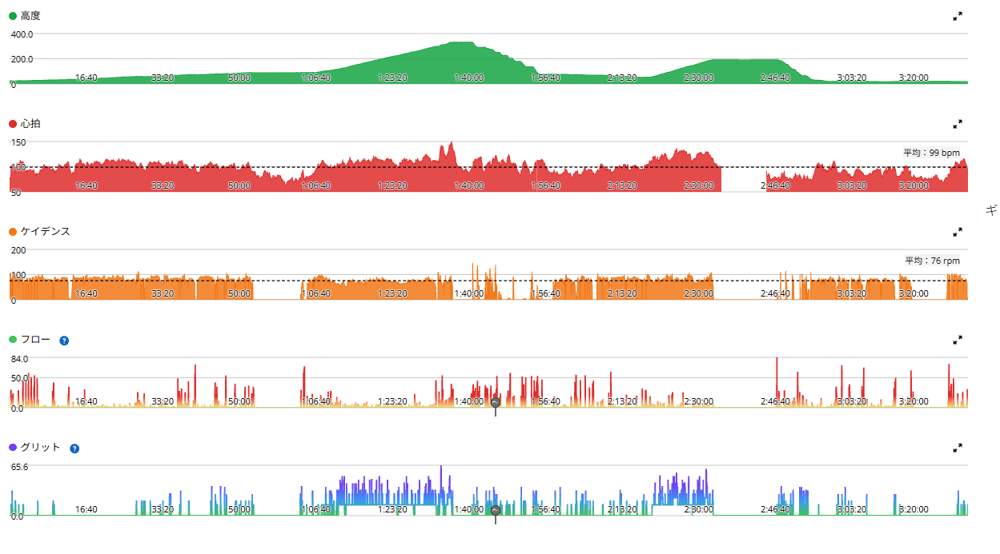
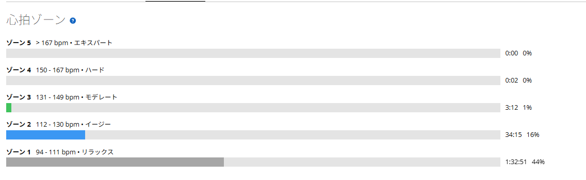

4日目は追い込まず、久しぶりのMTBで友人2人と遊ぶ
今日は友人2人と、久しぶりにMTBへ。ここ数日はロードとローラーでしっかり負荷を積んでいたので、今日は最初から「トレーニング」というより、気持ちよく遊ぶ日という感じだった。
感覚が鈍っていないか少し心配だったが、終わってみれば気持ちのいいライドだった。

39.05km・3時間28分・平均心拍99bpm
- 全体39.05km / 3時間28分35秒（移動2時間44分49秒）/ 獲得485m
- 速度平均移動速度14.2km/h / 最高35.1km/h
- 心拍・回転平均99bpm / 最大150bpm / 平均76rpm
- 気温平均19.0℃（最低14.0℃・最高28.0℃）
- 効果有酸素TE1.6 / 無酸素TE0.0 / 運動負荷21

久しぶりでも、転倒ゼロ
今日いちばんうれしかったのはこれ。久しぶりのMTBで、転倒は一度もなかった。
MTBはロードと違って、路面の変化、ライン取り、ブレーキング、身体の使い方、バイクコントロールを、ずっと考えながら走る。久しぶりだと少し怖さが出ることもあるが、今日はそういう感じもあまりなく、「ちゃんと身体が覚えているな」という感覚だった。
友人2人と走ると、やっぱり楽しい
ロードの練習だと、どうしてもパワーやタイムを気にする時間が増える。太平山で何W、琴平峠で何W、ローラーで何分維持できたか。それはそれで面白い。
でもMTBは、数字とは少し違う楽しさがある。友人と一緒に山へ入って、路面を見ながら走って、止まって話して、また走る。今日はかなり純粋に「自転車で遊んだ日」だった。
4日目は、自然に強度を落とせた
- 10月8日太平山反時計回り / TSS165.6
- 10月9日太平山反時計回り / TSS158.8
- 10月10日ローラー / TSS105.9
- 今日MTB / 運動負荷21 / 心拍ゾーン1と2がほとんど（ゾーン4は2秒）
3日連続でしっかり負荷を積んだ翌日が、今日である。3時間半近く乗っているが、ほとんどが心拍ゾーン1と2。短い登りやテクニカルな場面で一瞬上がるくらいで、ロードの登りやローラーのように高い心拍を続ける場面はなかった。
ただ、MTBは心拍の数字だけでは測れない。路面に合わせて身体を動かしたり、バイクを押さえたり、体幹や上半身を使ったりと、ロードとは違うところに刺激が入る。心肺は休ませる。でも身体はちゃんと使う。完全休養ではなく、動きながら強度だけ落とす日になった。

今日やってみて思ったこと
ここ数日は、ロードで踏む、ロードで回す、ローラーで一定出力と、トレーニングらしい日が続いていた。そこから今日はMTB。同じ自転車でも使い方がまるで違って、いい気分転換になった。数字だけ見れば負荷は低い。でも満足度はかなり高い。こういう日も、富士ヒルへ向けて長く続けていくには大事だと思う。久しぶりのMTBを友人2人と気持ちよく走れて、転倒もなし。いい1日だった。
次に見るポイント
- 翌日の脚ロードの高強度のあとにMTBを入れたとき、翌日の脚がどうなるか
- 身体全体心肺の負荷が低くても、体幹や上半身の疲れがどう出るか
- 続け方友人とのMTBを無理なく続ける。ロードとローラーだけに偏りすぎない